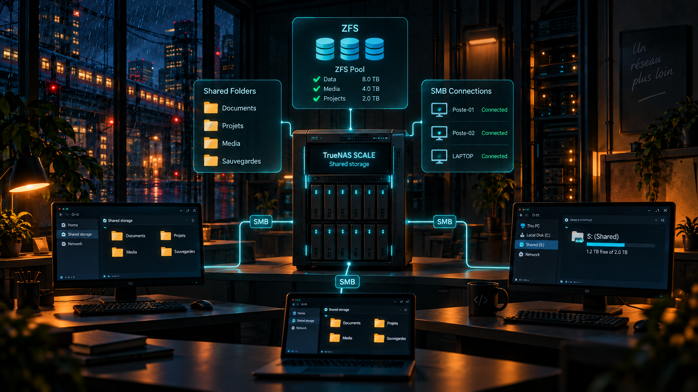

En clair
Qu'est-ce que c'est ?
Un NAS est un serveur spécialisé dans le stockage de fichiers sur le réseau. Dans DEVIDA, TrueNAS permet aux utilisateurs du domaine d'accéder à un espace partagé.
Analogie simple : C'est l'équivalent d'un disque dur commun à toute l'entreprise, accessible depuis les ordinateurs autorisés.
Utilité
À quoi ça sert ?
- Centraliser des fichiers sur le réseau.
- Partager des dossiers entre les utilisateurs.
- Présenter automatiquement un lecteur réseau Z: aux utilisateurs via une GPO.
DEVIDA
Ce que j'ai mis en place
- TrueNAS SCALE configuré à l'adresse 192.168.10.201.
- Création d'un pool de stockage ZFS et de partages SMB.
- Jonction du serveur au domaine DEVIDA.
- Mappage automatique du lecteur Z: via GPO.
Vocabulaire
Les mots techniques expliqués simplement
NAS
Serveur de stockage accessible par le réseau.
Serveur de stockage accessible par le réseau.
ZFS
Système de fichiers utilisé ici pour organiser le stockage TrueNAS.
Système de fichiers utilisé ici pour organiser le stockage TrueNAS.
SMB
Protocole couramment utilisé pour partager des fichiers sur un réseau Windows.
Protocole couramment utilisé pour partager des fichiers sur un réseau Windows.
Lecteur Z:
Lettre de lecteur utilisée sur les postes pour accéder au partage réseau.
Lettre de lecteur utilisée sur les postes pour accéder au partage réseau.